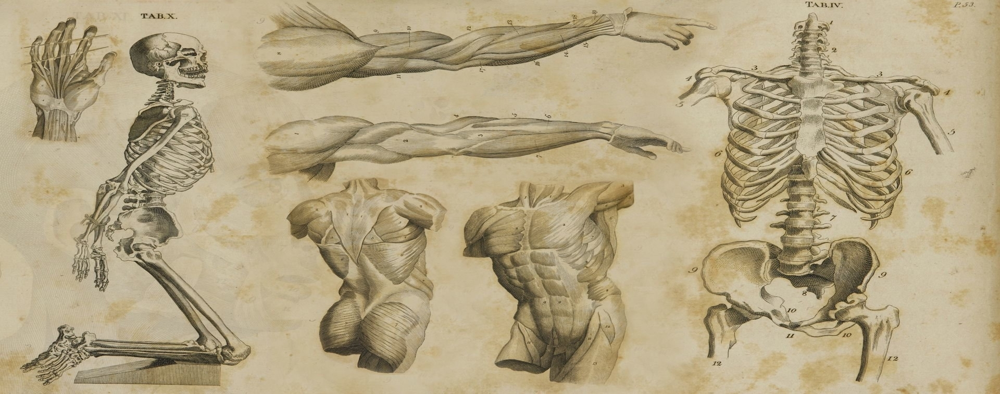

-

-

Anatomia este o ramură a biologiei morfologice care studiază forma și structura organismelor, ca și ale părților lor
componente. În mod curent, termenul are mai ales o conotație medicală deși metodele anatomiei sunt aplicabile pentru
orice organism pluricelular. Studiul anatomiei este strâns legat de cel al fiziologiei.
Fiziologia se ocupă cu studiul funcțiilor mecanice, fizice și biochimice ale organismelor vii. Între formă, structură şi funcție există o strânsă legătură anatomic,
impunându-se o cercetare interdisciplinară (conceptul complementarității).
Anatomia, fiind o ramură a biologiei, este în acelaşi timp şi cea mai veche dintre ştiinţele fundamentale ale
studiului medical fără de care nu poate fi conceput studiul organismului fiinţei umane în normă, în dezvoltarea
sa ontogenetică, precum şi profilaxia şi tratamentul diferitor maladii. Deci, anatomia omului este strâns legată de
activitatea zilnică a fiecărui medic iar pentru orice medic, anatomia este întocmai ca harta pentru un călător.
Obiectul de studiu al anatomiei este omul viu, ca sistem biologic concret senzorial.
Descrierea analitică (forma, mărimea, consistența, culoarea, poziția, modul de fixare) a părților componente ale subsistemelor corpului uman reprezentintă conținutul anatomiei descriptive sau anatomiei sistematice. Pe baza datelor descriptiv-analitice s-a dezvoltat studiul descriptiv-sintetic de care se ocupă anatomia topografică. Ea studiază raporturile dintre elementele şi structurile subsistemelor, descriindu-le în planuri succesive, de la suprafață în profunzime, fără a lua în considerare subsistemul de care aparține structura întâlnită.

Studiul suprafețelor regiunilor corpului se realizează în cadrul anatomiei clinice sau anatomiei pe viu.
Evoluția şi diversitatea morfologiei omului în timp şi spațiu sunt studiate de o ramură a anatomiei numită antropologia fizică sau anatomia generală.
Artiştii plasticieni au fost dintotdeauna interesați de cunoaşterea morfologiei corpului uman şi prin eforturile lor s-a dezvoltat o nouă ramură
a anatomiei numiră anatomia artistică.
Forma corpului uman şi a subsistemelor componente precum şi raporturile
dintre elemente, structuri şi subsisteme, suferă modificări în ontogeneză. Studiul
creşterii şi diferențierii, ca latură cantitativă, respectiv calitativă a procesului de
dezvoltare a corpului uman se efectuează în cadrul anatomiei dezvoltării. Legile
generale de organizare a lumii animale ce rezultă din corelarea tuturor cunoştințelor
asupra formei şi structurilor subsistemelor organismelor alcătuiesc obiectul de
studiu al anatomiei filozofice.
În funcție de metode deosebim anatomia macro - de cea microscopică. Anatomia macroscopică este de fapt anatomia propriu-zisă în sensul larg şi înrădăcinat al cuvântului. Ea cuprinde studiul corpului omenesc considerat ca un întreg, a formei organelor şi raporturilor dintre ele. Anatomia microscopică studiază elementele şi structurile subsistemelor corpului uman cu ajutorul microscopului. Pătrunderea anatomistului în micro- şi inframicrostructură este determinată de necesitatea obiectivă a interpretării organizării macrostructurilor în dinamica lor funcțională şi ontogenetică.
Funcțiile fundamentale ale organismului
Funcția de relație
Prin funcția de relație se realizează legătura dintre organism și mediul înconjurător. Prin această funcție organismul uman ia cunoștință despre realitatea înconjurătoare și acționează în consecință la diferiți stimuli din mediul înconjurător.
Funcția de nutriție
Funcțiile de nutriție asigură supraviețuirea individului, prin realizarea funcțiilor metabolice (prelucrare și transport de substanță). Sistemele care participă la funcția de nutriție sunt: digestiv, respirator, circulator și excretor.
Funcția de reproducere
Reproducerea este o proprietate fundamentală a organismului care se realizează prin participarea a doi indivizi de sex diferit.